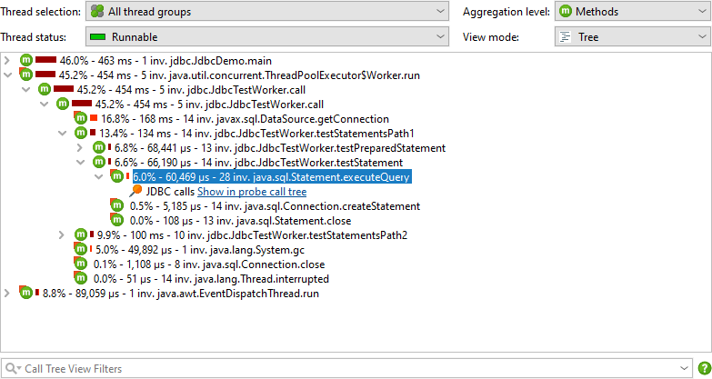

CPU and memory profiling are primarily concerned with objects and method calls, the basic building blocks of an application on the JVM. For some technologies, a more high-level approach is required that extracts semantic data from the running application and displays it in the profiler.
The most prominent example for this is profiling calls to a database with JDBC. The call tree shows when you use the JDBC API and how long those calls take. However, different SQL statements may be executed for each call and you have no idea which of those calls are responsible for a performance bottleneck. Also, JDBC calls often originate from many different places in your application and it is important to have a single view that shows all database calls instead of having to search for them in the generic call tree.
To solve this problem, JProfiler offers a number of probes for important subsystems in the JRE. Probes add instrumentation into specific classes to collect their data and display them in dedicated views in the "Databases" and "JEE & Probes" view sections. In addition, probes can annotate data into the call tree so you can see both generic CPU profiling as well as high-level data at the same time.
If you are interested in getting more information about a technology that is not directly supported by JProfiler, you can write your own probe for it. Some libraries, containers or database drivers may ship with their own embedded probe that becomes visible in JProfiler when they are used by your application.
Probe events
Because probes add overhead, they are not recorded by default, but you have to start recording separately for each probe, either manually or automatically.
Depending on the capabilities of the probe, probe data is displayed in a number of views. At the lowest level are probe events. Other views show data that cumulates probe events. By default, probe events are not retained even when a probe is being recorded. When single events become important, you can record them in the probe events view. For some probes, like the file probe, this is generally not advisable because they usually generate events at a high rate. Other probes, like the servlet probe or the JDBC probe may generate events at a much lower rate and so recording single events may be appropriate.
Probe events capture a probe string from a variety of sources, including method parameters, return values, the instrumented object and thrown exceptions. Probes may collect data from multiple method calls, for example like the JDBC probe that has to intercept all setter calls for prepared statements in order to construct the actual SQL string. The probe string is the basic information about the higher-level subsystem that is measured by the probe. In addition, an event contains a start time, an optional duration, the associated thread and a stack trace.
At the bottom the of the table, there is a special total row that sums all numeric columns in the table. For the default columns, this only includes the Duration column, Together with the filter selector above the table, you can analyze the collected data for selected subsets of events. By default, the text filter works on all available columns. In order to be more specific, you can select a particular column from the filter options popup menu.
Probes can record different kinds of activities and associate an event type with their probe events. For example, the JDBC probe shows statements, prepared statements and batch executions as event types with different colors.
To prevent excessive memory usage when single events are recorded, JProfiler consolidates events. The event cap is configured in the profiling settings and applies to all probes. Only the most recent events are retained, older events are discarded. This consolidation does not affect the higher-level views.
Probe call tree and hot spots
Probe recording works closely together with CPU recording. Probe events are aggregated into a probe call tree where the probe strings are the leaf nodes, called "payloads". Only call stacks where a probe event has been created are included in that tree. The information on the method nodes refers to the recorded payload names. For example, if an SQL statement was executed 42 times at a particular call stack with a total time of 9000 ms, this adds an event count of 42 and a time of 9000 ms to all ancestor call tree nodes. The cumulation of all recorded payloads forms the call tree that shows you which call paths consume most of the probe-specific time. The focus of the probe tree is the payloads, so the view filter searches for payloads by default, although its context menu also offers a mode to filter classes.
If CPU recording is switched off, the back traces will only contain a "No CPU data was recorded" node. If CPU data was only partially recorded, there may be a mixture of these nodes with actual back traces. Even if sampling is enabled, JProfiler records the exact call traces for probe payloads by default. If you want to avoid this overhead, you can switch it off in the profiling settings. There are several other tuning options for probe recording that can be adjusted to increase data collection or reduce overhead.
Hot spots can be calculated from the probe call tree. The hot spot nodes are now payloads and not method calls like in the CPU view section. This is often the most immediately useful view of a probe. If CPU recording is active, you can open the top-level hot spots and analyze the method backtraces, just like in the regular CPU hot spots view. The numbers on the back trace nodes indicate how many probe events with what total duration were measured along the call stack extending from the deepest node to the node just below the hot spot.
Both probe call tree as well as probe hot spots view allow you to select a thread or thread group, the thread status and an aggregation level for method nodes, just like in the corresponding CPU views. When you come from the CPU views to compare data, it is important to keep in mind that the default thread status in the probe views is "All states" and not "Runnable" like in the CPU views. This is because a probe event often involves external systems like database calls, socket operations or process executions where it is important to look at the total time and not only on the time that the current JVM has spent working on it.
Control objects
Many libraries that provide access to external resources give you a connection object that you can use
for interacting with the resource. For example, when starting a process, the java.lang.Process
object lets you read from the output streams and write to the input stream. When working with JDBC, you need
a java.sql.Connection object to perform SQL queries. The generic term that is used in JProfiler
for this kind of object is "control object".
Grouping the probe events with their control objects and showing their life cycle can help you to better understand where a problem comes from. Also, creating control objects is often expensive, so you want to make sure that your application does not create too many and closes them properly. For this purpose, probes that support control objects have a "Time line" and a "Control objects" view, where the latter may be named more specifically, for example "Connections" for the JDBC probe. When a control object is opened or closed, the probe creates special probe events that are shown in the events view, so you can inspect the associated stack traces.
In the time line view, each control object is shown as a bar whose coloring shows when the control object was active. Probes can record different event types and the time line is colored accordingly. This status information is not taken from the list of events, which may be consolidated or not even available, but is sampled every 100 ms from the last status. Control objects have a name that allows you to identify them. For example, the file probe creates control objects with the file name while the JDBC probe shows the connection string as the name of the control object.
The control objects view shows all control objects in tabular form. Both open and closed control objects are present by default. You can use the controls at the top to restrict the display to open or closed control objects only or to filter the contents of a particular column. In addition to the basic life cycle data for control objects, the table shows data for the cumulated activity of each control object, for example the event count and the average event duration.
Different probes show different columns here, the process probe for example shows separate sets of columns for read and write events. This information is also available if single event recording is disabled. Just like for the events view, the total row at the bottom can be used together with filtering to get cumulated data on partial sets of control objects.
A probe can publish certain properties in a nested table. This is done to reduce the information overload in the main table and give more space to table columns. If a nested table is present, such as for the file and process probes, each row has an expansion handle at the left side that opens a property-value table in place.
The time line, control objects view and the events view are connected with navigation actions. For example, in the time line view, you can right-click a row and jump to each of the other views so that only the data from the selected control object is displayed. This is achieved by filtering the control object ID to the selected value.
Telemetries and tracker
From the cumulated data that is collected by a probe, several telemetries are recorded. For any probe, the number of probe events per second and some average measure for probe events like the average duration or the throughput of an I/O operation are available. For probes with control objects, the number of open control objects is also a canonical telemetry. Each probe can add additional telemetries, for example the JPA probe shows separate telemetries for query counts and entity operation counts.
The hot spots view and the control objects view show cumulated data that can be interesting to track over time. These special telemetries are recorded with the probe tracker. The easiest way to set up tracking is to add new telemetries with the Add Selection to Tracker action from the hot spots or control object views. In both cases, you have to choose if you want to track times or counts. When tracking control objects, the telemetry is a stacked area graph for all different probe event types. For tracked hot spots, the tracked times are split into the different thread states.
JDBC and JPA
The JDBC and JPA probes work hand in hand. In the events view of the JPA probe, you can expand single events to see the associated JDBC events if the JDBC probe was recorded along with the JPA probe.

Similarly, the hot spots view adds a special "JDBC calls" node to all hot spots that contains the JDBC calls that were triggered by the JPA operation. Some JPA operations are asynchronous and are not executed immediately, but at some arbitrary later point in time when the session is flushed. When looking for performance problems, the stack trace of that flush is not helpful, so JProfiler remembers the stack traces of where existing entities have been acquired or where new entities have been persisted and ties them to the probe events. In that case, the back traces of the hot spot are contained inside a node that is labelled "Deferred operations", otherwise a "Direct operations" node is inserted.
Other probes like the MongoDB probe support both direct and asynchronous operations. Asynchronous operations are not executed on the current thread but somewhere else, either on one or multiple other threads in the same JVM or in another process. For such probes, the back traces in the hot spots are sorted into "Direct operations" and "Async operation" container nodes.
A special problem in the JDBC probe is that you can only get good hot spots if literal data like IDs is not included in the SQL strings. This is automatically the case if prepared statements are used, but not if regular statements are executed. In the latter case, you will likely get a list of hot spots, where most queries are executed just once. As a remedy, JProfiler offers a non-default option in the JDBC probe configuration for replacing literals in unprepared statements. For debugging purposes, you may still want to see the literals in the events view. Deactivating that option reduces memory overhead, because JProfiler will not have to cache so many different strings.
On the other hand, JProfiler collects the parameters for prepared statements and shows a complete SQL string without placeholders in the events view. Again, this is useful when debugging, but if you do not need it, you can switch it off in the probe settings in order to conserve memory.
JDBC connection leaks
The JDBC probe has a "Connection leaks" view that shows open virtual database connections that have not been returned to their database pool. This only affects virtual connections that are created by a pooled database source. Virtual connections block a physical connection until they are closed.
There are two types of leak candidates, "unclosed" connections and "unclosed collected" connections.
Both types are virtual connections where the connection objects that have been handed out by the
database pool are still on the heap, but close() has not been called on them.
"Unclosed collected" connections have been garbage collected and are definite connection leaks.
"Unclosed" connection objects are still on the heap. The greater the Open Since duration, the more likely
such a virtual connection is a leak candidate. A virtual connection is considered as a potential leak when it has
been open for more than 10 seconds. However, close() may still be called on it, and then the entry in
the "Connection leaks" view would be removed.
The connection leaks table includes a Class Name column that shows the name of the connection class. This will tell you which type of pool has created the connection. JProfiler explicitly supports a large number of database drivers and connection pools and knows which classes are virtual and physical connections. For unknown pools or database drivers, JProfiler may mistake a physical connection for a virtual one. Since physical connections are often long-lived, it would then show up in the "Connection leaks" view. In this case, the class name of the connection object will help you to identify it as a false positive.
By default, when you start probe recording, the connection leak analysis is not enabled. There is a separate recording button in the connection leaks view whose state corresponds to the Record open virtual connections for connection leak analysis check box in the JDBC probe settings. Just like for event recording, the state of the button is persistent, so if you start the analysis once, it will automatically be started for the next probe recording session.
Payload data in the call tree
When looking at the CPU call tree, it is interesting to see where probes have recorded payload data. That data may help you to interpret the measured CPU times. That is why many probes add cross-links into the CPU call tree. For example, the class loader probe can show you where class loading has been triggered. This is otherwise not visible in the call tree and can add unexpected overhead. A database call that is otherwise opaque in the call tree view can be further analyzed in the corresponding probe with a single click. This even works for call tree analyses where the analysis is automatically repeated in the context of the probe call tree view when you click on the probe link.

Another possibility is to show the payload information inline directly in the CPU call tree. All relevant probes have an Annotate in call tree option in their configuration for that purpose. In that case, no links into the probe call tree are available. Each probe has its own payload container node. Events with the same payload names are aggregated and the number of invocations and total times are displayed. Payload names are consolidated on a per-call stack basis, with the oldest entries being aggregated into an "[earlier calls]" node. The maximum number of recorded payload names per call stack is configurable in the profiling settings.
Call tree splitting
Some probes do not use their probe strings to annotate payload data into the call tree. Rather, they split the call tree for each different probe string. This is especially useful for server-type probes, where you want to see the call tree separately for each different type of incoming request. The servlet probe intercepts URLs and gives you fine grained control over what parts of the URL should be used for splitting the call tree. By default, it only uses the request URI without any parameters.
For more flexibility, you can define a script that determines the split string. In the script, you get the
current javax.servlet.http.HttpServletRequest as a parameter and return the desired string.
What's more, you are not limited to a single splitting level, but can define multiple nested splittings. For example, you can split by the request URI first and then by the user name that is extracted from the HTTP session object. Or, you can group requests by their request method before splitting by the request URI.
By using nested splittings, you can see separate data for each level in the call tree. When looking at the call tree, a level might get in the way and you would find yourself in need of eliminating it from the servlet probe configuration. More conveniently and without loss of recorded data, you can temporarily merge and unmerge splitting levels in the call tree on the fly by using the context menu on the corresponding splitting nodes.

Splitting the call tree can cause considerable memory overhead, so it should be used carefully. To avoid memory overload, JProfiler caps the maximum number of splits. If the splitting cap for a particular split level has been reached, a special "[capped nodes]" splitting node is added with a hyperlink to reset the cap counter. If the default cap is too low for your purposes, you can increase it in the profiling settings.